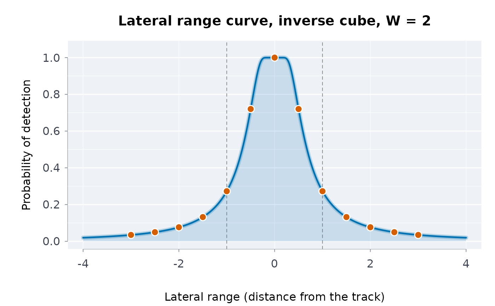
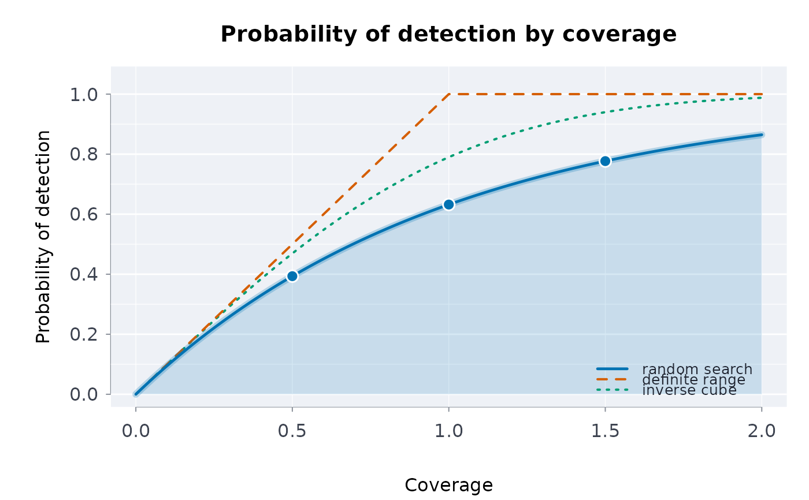
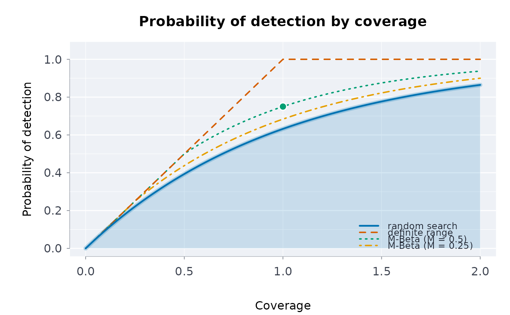
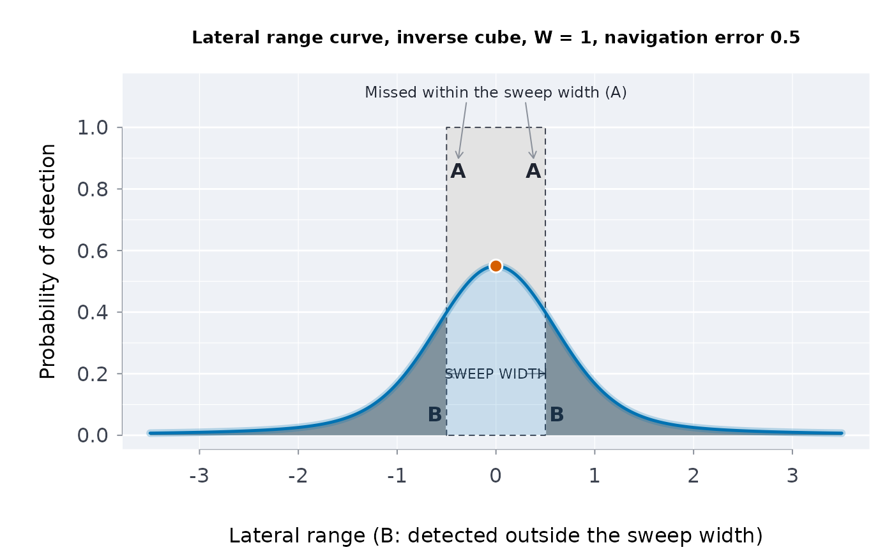
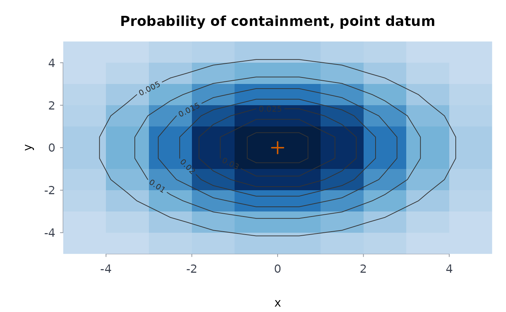
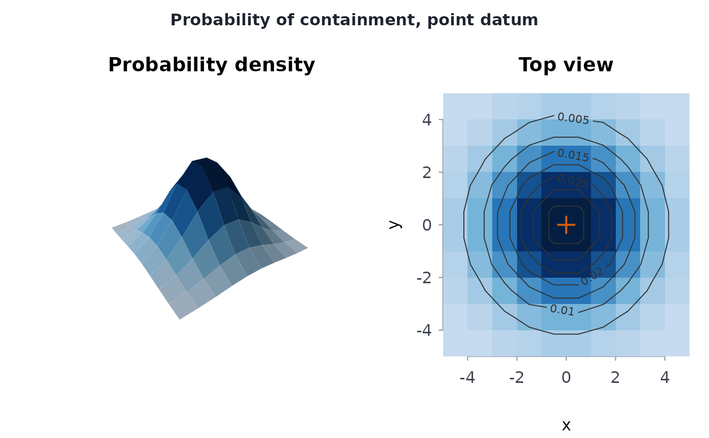
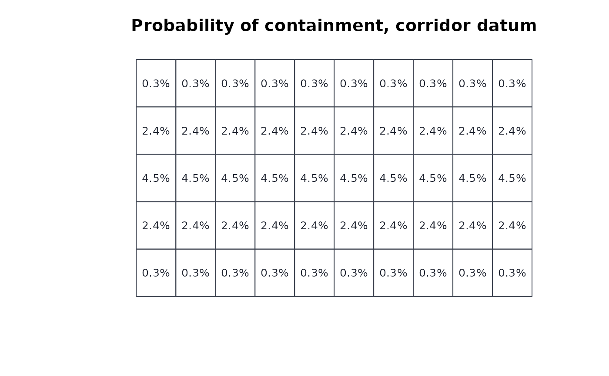
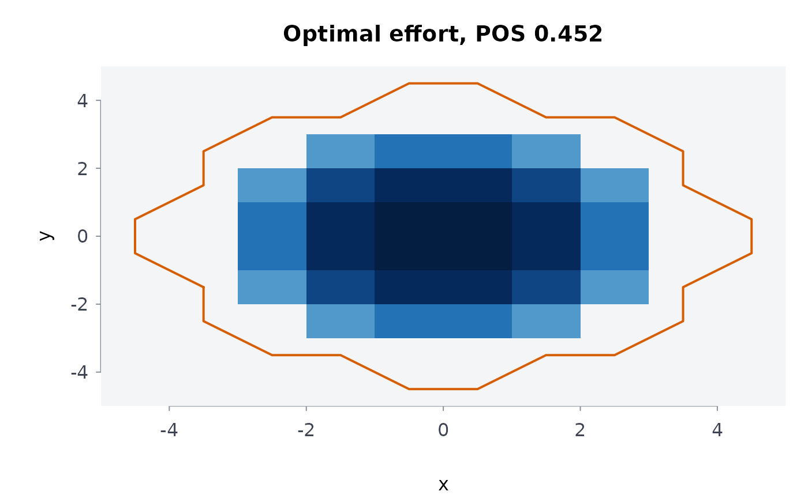
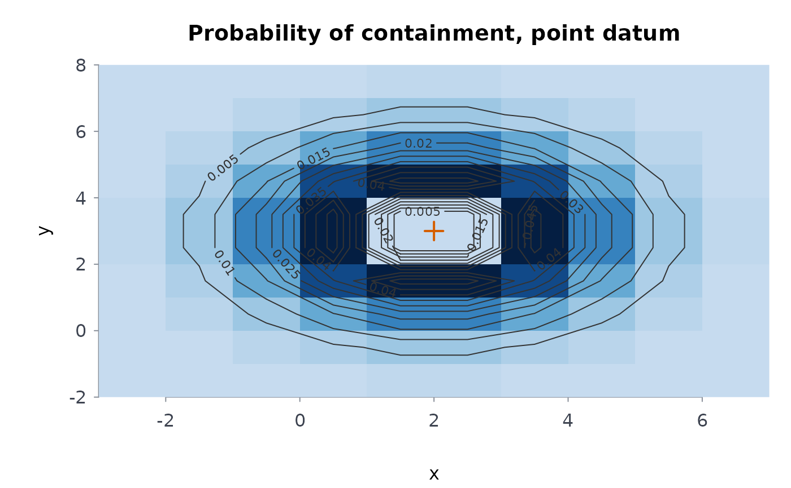

The quantities a search and rescue planner works with (Koopman's search theory, as used in the U.S. Coast Guard and IAMSAR planning methods):
ltrlrng()(lateral range): the probability that a sensor passing at distancexdetects the object, under the inverse cube, definite range or M-Beta model with sweep widthW;swpwdth()(sweep width): the area under a sampled lateral range curve;srchpod()(search POD): the probability of detection from coverage, for random search, a definite-range sweep and an inverse cube parallel sweep;pswppod()(parallel sweep POD): the POD of a parallel sweep at track spacingS, computed for any model, with optional normal navigation error;srchscs()(search success): the probability of success, the cumulative POD of repeated searches and the containment probabilities updated after an unsuccessful search;datumpmap()(datum probability map): the probability that each grid cell contains the object, for a point, line or area datum;optcrcsrch()(optimal circular search): Koopman's optimal effort for a circular normal datum;opteffort()(optimal effort): the allocation of a fixed effort over cells that maximises the probability of success.
Usage
ltrlrng(x, W, model = c("invcube", "definite", "mbeta"), m = 1, navsd = 0)
swpwdth(x, p = NULL)
srchpod(
coverage = NULL,
model = c("random", "definite", "invcube", "mbeta"),
m = 1,
W = NULL,
effort = NULL,
area = NULL
)
pswppod(
W,
S,
model = c("invcube", "definite", "mbeta"),
m = 1,
navsd = 0,
npts = 2001,
ntrk = 60
)
srchscs(poc, pod)
datumpmap(
xedg,
yedg,
datum = c("point", "line", "area", "corridor", "general"),
center = c(0, 0),
sigma = 1,
end = NULL,
nodes = 64,
wts = NULL
)
optcrcsrch(sigma, W, effort)
opteffort(poc, area = NULL, W, effort, tol = 1e-14)Arguments
- x
Numeric vector: lateral ranges (distances from the track), any sign. For
swpwdth(), strictly increasing abscissae, or anrmbl_ltrlrngobject (thenpis taken from it).- W
Positive number: the sweep width, in the distance unit of the grid and the effort (nautical miles, kilometres: one unit throughout). For
srchpod(), give it witheffortandareain place ofcoverage; defaultNULL.- model
For
ltrlrng()andpswppod():"invcube"(the default),"definite"or"mbeta". Forsrchpod():"random"(the default),"definite","invcube"or"mbeta".- m
Number in (0, 1]: the M-Beta detection probability inside its range. Default 1.
Non-negative number: the standard deviation of the cross-track navigation error, in the units of
x. Default 0.- p
Numeric vector in [0, 1]: the lateral range curve at
x.- coverage
Non-negative numeric vector of coverages (sweep width times track length over the area searched; 1 means the effort equals the area). Default
NULL: thenW,effortandareagive it,W * effort / area. Give one or the other, not both.- effort
Non-negative number: the total effort, as track length (the distance the searchers travel while searching, in the unit of
W). Forsrchpod(), the track length in each area, one number or one per area (a matrix laid out like the map whenareais one); defaultNULL.- area
Positive numeric vector, one per cell: the cell areas, in the square of the unit of
W. May beNULLwhenpocis anrmbl_datummap(its cells' areas are used). Forsrchpod(), the areas searched, or a map fromdatumpmap()whose cell areas are taken; defaultNULL.- S
Positive number: the track spacing.
- npts, ntrk
Whole numbers: the quadrature points across one spacing (at least 3, raised to the next odd number; default 2001) and the tracks on each side (at least 1; default 60).
- poc
Numeric vector or matrix in [0, 1], summing to at most 1: the probability that each area contains the object (your own areas' shares, for example from a consensus of the planners' scenarios). For
srchscs()andopteffort()also a probability map fromdatumpmap(): its cells are the areas, in the order ofas.vector(map$poc).- pod
Numeric vector in [0, 1], one per area, or a matrix with one row per search and one column per area. When
pocis a map, also a matrix laid out like the map (one search, cell by cell), asrchpod()result with one value per cell, or anopteffort()result (its cells' PODs).- xedg, yedg
Strictly increasing numeric vectors: the cell edges of the grid laid over your search area, east-west and north-south, in the distance unit (
seq(-5, 5, by = 0.5): half-unit cells over ten units). Cells may differ in size.- datum
"point"(the default),"line","area","corridor"or"general".- center
Two numbers, x then y in the grid's coordinates: the datum point (for example the last known position), the start of a line datum or a corner of an area datum. Default
c(0, 0).- sigma
Positive number: the standard deviation of the circular normal position error, in the distance unit (a total probable error
Eis1.1774 sigma). Default 1.- end
Two numbers: the end of a line datum or the opposite corner of an area datum;
NULLfor a point datum.- nodes
Whole number from 2 to 1000: Gauss-Legendre nodes along a line datum. Default 64.
- wts
For
datum = "general": a non-negative matrix of cell weights, one row perycell and one column perxcell.- tol
Positive number: the bisection tolerance on log lambda.
Value
ltrlrng(): a numeric vector of class rmbl_ltrlrng
(the detection probabilities, with the inputs as attributes;
as.numeric() drops them). srchpod(): a numeric vector of
class rmbl_srchpod. swpwdth() and pswppod(): one
number. srchscs(): a list of class rmbl_srchscs with
pos (the probability of success), posarea (per area),
pocupd (the updated containment probabilities) and
cumpod (the cumulative POD per area), and when poc is a
map, map: the map after the unsuccessful search, ready for
opteffort() and plot(). datumpmap(): a list
of class rmbl_datummap with poc, a matrix with one row
per y cell and one column per x cell, outside, and
the inputs. optcrcsrch(): a list of class rmbl_optcrc with
radius, pos and cntrdns (the coverage at the
centre). opteffort(): a list of class rmbl_opteffort with
effort, coverage and pod per cell (a matrix when
poc is one), pos and lambda. Every class has a
print() method, and plot() draws the lateral range curve
(equiv = TRUE adds the equivalent definite-range rectangle,
spacing a second track), the POD by coverage for any of the
models (models, m, cmax), the map as an image with
contours, a surface banded by height, the surface and its top view side
by side (the device's two panels, or the
next two of a layout the caller set with par(mfrow = )), or its
cells with their percentages (view), and the allocation (see
plot-methods). srchfig draws every figure of
Frost (1996) with them.
Details
Coverage is C = W z / A: sweep width times track length over the
area searched (for a parallel sweep, W / S). The lateral range
curves are: definite range, p(x) = 1 for |x| <= W / 2;
M-Beta, p(x) = m for |x| <= W / (2 m); inverse cube,
p(x) = 1 - exp(-W^2 / (4 pi x^2)). Each has area W, the
sweep width. swpwdth() integrates by the trapezoid rule.
With navsd > 0, ltrlrng() gives the expected curve seen
through a normal cross-track navigation error: the convolution of the curve
with that normal (Frost 1996, equation 5-14), exact for the rectangular
curves and by the trapezoid rule for the inverse cube. Its
area is still W; the curve is lower and wider.
srchpod(): random search 1 - exp(-C); definite range
min(C, 1); inverse cube parallel sweep
erf(sqrt(pi) C / 2) (Koopman 1956); M-Beta parallel sweep
C for C < M and 1 - (1 - M)^(C / M) above it
(Frost 1996, equation 5-11), which is exact wherever the tracks overlap a
whole number of times.
pswppod() integrates over one track spacing (Simpson's rule on
npts points) the probability that at least one of the tracks
-ntrk, ..., ntrk detects the object; for the inverse cube model the
tracks beyond ntrk are added in closed form from
sum_k 1 / (x - k S)^2 = (pi / S)^2 / sin^2(pi x / S). With
navsd > 0 the lateral range curve is averaged over a normal
cross-track error (40-point Gauss-Hermite quadrature). Without navigation
error the inverse cube result equals srchpod(W / S, "invcube").
srchscs(): the probability of success is
POS = sum(POC * POD); after an unsuccessful search the containment
probabilities become POC (1 - POD) / (1 - POS) (Bayes). With several
searches (pod a matrix, one row per search) the update is applied in
turn and the cumulative POD is 1 - prod(1 - POD) per area. When a
search is certain to succeed (POS = 1) the update is undefined: it
is returned as NA, with a warning.
datumpmap(): a point datum is a circular normal of standard
deviation sigma about center; a line datum the same spread
along the segment from center to end (Gauss-Legendre
quadrature on nodes points); an area datum a uniform distribution
over the rectangle with corners center and end; a corridor
datum normal across the segment from center to end and
uniform along it, with nothing beyond its ends (Frost 1996, figure 3-8;
the segment must run along x or along y); a general datum the cell weights
wts scaled to sum to 1. The share of the probability outside the
grid is returned as outside.
optcrcsrch(): with effort (track length) L, the optimal
search of a circular normal datum covers a disc of radius
R = (4 sigma^2 W L / pi)^(1/4), and succeeds with probability
1 - (1 + u) exp(-u), u = R^2 / (2 sigma^2) (Koopman 1957).
opteffort(): under random search detection the optimal effort in
cell i is z_i = (A_i / W) log(r_i / lambda) where
r_i = POC_i W / A_i exceeds lambda, and 0 elsewhere; the
Lagrange multiplier lambda is found by bisection on its logarithm so
that the efforts add up to effort (Stone 1975, chapter 2). It assumes
random search detection in every cell (the exponential POD curve,
srchpod(model = "random")), the conservative choice when the tracks
are not laid evenly; a plan searched by parallel sweeps does at least as
well.
All distances (x, W, S, navsd, the grid
edges, center, end, sigma, effort) are in one
unit of your choice, and areas in its square.
Every input is checked: numbers must be finite and of the right length, sweep widths, spacings and standard deviations positive, probabilities in [0, 1] and containment probabilities summing to at most 1; unknown models and datum types are errors.
References
Koopman, B. O. (1946). Search and Screening. OEG Report 56, Operations Evaluation Group, Office of the Chief of Naval Operations.
Koopman, B. O. (1956). The theory of search. I. Kinematic bases. Operations Research 4(3), 324-346. doi:10.1287/opre.4.3.324
Koopman, B. O. (1956). The theory of search. II. Target detection. Operations Research 4(5), 503-531. doi:10.1287/opre.4.5.503
Koopman, B. O. (1957). The theory of search. III. The optimum distribution of searching effort. Operations Research 5(5), 613-626. doi:10.1287/opre.5.5.613
Frost, J. R. (1996). The Theory of Search: A Simplified Explanation. Soza and Company and U.S. Coast Guard Office of Search and Rescue.
Stone, L. D. (1975). Theory of Optimal Search. Academic Press.
Examples
# inverse cube detection 0.5, 1 and 2 sweep widths off the track
ltrlrng(c(0.5, 1, 2), W = 1)
#> ╭── Lateral range curve ─────────────────────────────────────────────────────╮
#> │ Model inverse cube │
#> │ Sweep width W 1 │
#> │ Ranges 3, from 0.5 to 2 │
#> │ Highest pod 0.2726 │
#> │ │
#> │ range pod │
#> │ ------- -------- │
#> │ 0.50000 0.272623 │
#> │ 1.00000 0.076494 │
#> │ 2.00000 0.019698 │
#> │ │
#> │ inverse cube model, sweep width W = 1 │
#> │ pod: the chance of detecting the object at that distance from the track. │
#> │ │
#> │ The sweep width W is the area under this curve. │
#> ╰────────────────────────────────────────────────────────────────────────────╯
plot(ltrlrng(seq(-3, 3, by = 0.5), W = 2))

# the area under the curve is the sweep width
xs <- seq(-200, 200, by = 0.01)
swpwdth(xs, ltrlrng(xs, W = 1, model = "definite"))
#> [1] 1.01
# POD at coverage 1 under the three models
srchpod(1)
#> ╭── Probability of detection ─────────────────────────────────────────╮
#> │ Model random search │
#> │ Coverages 1 │
#> │ │
#> │ coverage pod │
#> │ -------- -------- │
#> │ 1 0.632121 │
#> │ │
#> │ random search model │
#> │ Coverage is effort over area (sweep width x track length / area); │
#> │ pod is the chance a search at that coverage finds the object. │
#> ╰─────────────────────────────────────────────────────────────────────╯
srchpod(c(0.5, 1, 2), model = "invcube")
#> ╭── Probability of detection ─────────────────────────────────────────╮
#> │ Model inverse cube │
#> │ Coverages 3 │
#> │ │
#> │ coverage pod │
#> │ -------- -------- │
#> │ 0.50000 0.469116 │
#> │ 1.00000 0.789909 │
#> │ 2.00000 0.987811 │
#> │ │
#> │ inverse cube model │
#> │ Coverage is effort over area (sweep width x track length / area); │
#> │ pod is the chance a search at that coverage finds the object. │
#> ╰─────────────────────────────────────────────────────────────────────╯
plot(srchpod(c(0.5, 1, 1.5)))

# the book's M-Beta curves against random search and the definite range
plot(
srchpod(1, "mbeta", m = 0.5),
models = c("random", "definite", "mbeta"),
m = c(0.5, 0.25)
)

# the expected curve under a navigation error as large as half the sweep
# width
plot(ltrlrng(0, W = 1, navsd = 0.5), equiv = TRUE)

# a parallel sweep at spacing 1.3 W, without and with navigation error
pswppod(1, 1.3)
#> [1] 0.6649981
pswppod(1, 1.3, navsd = 0.3, npts = 201)
#> [1] 0.6460403
# three areas searched once; the containment after finding nothing
srchscs(c(0.5, 0.3, 0.2), c(0.8, 0.5, 0))
#> ╭── Probability of success ────────────────────────────────────────────╮
#> │ Areas 3 │
#> │ Searches 1 │
#> │ Overall POS 0.55 │
#> │ │
#> │ area poc cumpod posarea pocupd │
#> │ ---- ------ ------ ------- ------ │
#> │ 1 0.5000 0.8000 0.4000 0.2222 │
#> │ 2 0.3000 0.5000 0.1500 0.3333 │
#> │ 3 0.2000 0.0000 0.0000 0.4444 │
#> │ │
#> │ POS 0.55 after 1 search │
#> │ poc: chance the object is in the area; cumpod: chance the searches │
#> │ detect it there; pocupd: the poc after the searches found nothing. │
#> ╰──────────────────────────────────────────────────────────────────────╯
# a point datum on a 10 x 10 grid, and the best use of 30 units of track
m <- datumpmap(seq(-5, 5), seq(-5, 5), sigma = 2)
plot(m)

plot(m, view = "both")

# the book's line datum: normal across the line, uniform along it
plot(
datumpmap(0:10, seq(-3, 3, by = 1.2), "corridor", c(0, 0), end = c(10, 0)),
view = "cells",
digits = 1
)

a <- opteffort(m, W = 1, effort = 30)
a$pos
#> [1] 0.4520985
plot(a)

optcrcsrch(sigma = 2, W = 1, effort = 30)$pos
#> [1] 0.4571532
# your own search, step by step: a last known position 2 km east and 3 km
# north of the base, known to about 1.5 km, on a grid of 1 km cells
own <- datumpmap(seq(-3, 7), seq(-2, 8), center = c(2, 3), sigma = 1.5)
own
#> ╭── Datum probability map (point datum) ──────────────────────────────────╮
#> │ Datum point │
#> │ Centre 2, 3 │
#> │ Sigma 1.5 │
#> │ Grid 10 x 10 cells (x by y) │
#> │ │
#> │ The most likely cells │
#> │ x y poc │
#> │ ----- ----- ------- │
#> │ 1.500 2.500 0.06126 │
#> │ 1.500 3.500 0.06126 │
#> │ 2.500 2.500 0.06126 │
#> │ 2.500 3.500 0.06126 │
#> │ 0.500 2.500 0.03992 │
#> │ │
#> │ 10 x 10 cells (x by y); 0.2% of the probability lies outside the grid │
#> ╰─────────────────────────────────────────────────────────────────────────╯
# 0.6 km sweep width; 12 km of track walked in each of the four cells round
# the position, none elsewhere
walked <- matrix(0, nrow(own$poc), ncol(own$poc))
walked[5:6, 5:6] <- 12
pd <- srchpod(W = 0.6, effort = walked, area = own, model = "invcube")
# the chance that search found the hiker, and the map if it did not
day1 <- srchscs(own, pd)
day1
#> ╭── Probability of success ────────────────────────────────────────────╮
#> │ Areas 100 │
#> │ Searches 1 │
#> │ Overall POS 0.245 │
#> │ Map 10 x 10 cells (x by y), updated in $map │
#> │ │
#> │ area poc cumpod posarea pocupd │
#> │ ---- ------- ------ ------- ------- │
#> │ 45 0.06126 1 0.06126 0.00000 │
#> │ 46 0.06126 1 0.06126 0.00000 │
#> │ 55 0.06126 1 0.06126 0.00000 │
#> │ 56 0.06126 1 0.06126 0.00000 │
#> │ 35 0.03992 0 0.00000 0.05287 │
#> │ 36 0.03992 0 0.00000 0.05287 │
#> │ 44 0.03992 0 0.00000 0.05287 │
#> │ 54 0.03992 0 0.00000 0.05287 │
#> │ 47 0.03992 0 0.00000 0.05287 │
#> │ 57 0.03992 0 0.00000 0.05287 │
#> │ 65 0.03992 0 0.00000 0.05287 │
#> │ 66 0.03992 0 0.00000 0.05287 │
#> │ 34 0.02601 0 0.00000 0.03445 │
#> │ 37 0.02601 0 0.00000 0.03445 │
#> │ 64 0.02601 0 0.00000 0.03445 │
#> │ 67 0.02601 0 0.00000 0.03445 │
#> │ 48 0.01694 0 0.00000 0.02244 │
#> │ 58 0.01694 0 0.00000 0.02244 │
#> │ 75 0.01694 0 0.00000 0.02244 │
#> │ 76 0.01694 0 0.00000 0.02244 │
#> │ │
#> │ POS 0.245 after 1 search │
#> │ poc: chance the object is in the area; cumpod: chance the searches │
#> │ detect it there; pocupd: the poc after the searches found nothing. │
#> │ │
#> │ The 20 most likely of 100 cells. │
#> ╰──────────────────────────────────────────────────────────────────────╯
# the best use of tomorrow's 40 km on what is left
day2 <- opteffort(day1$map, W = 0.6, effort = 40)
day2
#> ╭── Optimal allocation of effort ────────────────────────────╮
#> │ Total effort 40 │
#> │ Sweep width W 0.6 │
#> │ Cells searched 28 of 100 │
#> │ POS 0.5369 │
#> │ │
#> │ cell poc effort coverage pod │
#> │ ---- ------- ------ -------- ------ │
#> │ 35 0.05287 2.551 1.530 0.7835 │
#> │ 36 0.05287 2.551 1.530 0.7835 │
#> │ 44 0.05287 2.551 1.530 0.7835 │
#> │ 54 0.05287 2.551 1.530 0.7835 │
#> │ 47 0.05287 2.551 1.530 0.7835 │
#> │ 57 0.05287 2.551 1.530 0.7835 │
#> │ 65 0.05287 2.551 1.530 0.7835 │
#> │ 66 0.05287 2.551 1.530 0.7835 │
#> │ 34 0.03445 1.837 1.102 0.6678 │
#> │ 37 0.03445 1.837 1.102 0.6678 │
#> │ 64 0.03445 1.837 1.102 0.6678 │
#> │ 67 0.03445 1.837 1.102 0.6678 │
#> │ 48 0.02244 1.122 0.673 0.4901 │
#> │ 58 0.02244 1.122 0.673 0.4901 │
#> │ 75 0.02244 1.122 0.673 0.4901 │
#> │ 76 0.02244 1.122 0.673 0.4901 │
#> │ 25 0.02244 1.122 0.673 0.4901 │
#> │ 26 0.02244 1.122 0.673 0.4901 │
#> │ 43 0.02244 1.122 0.673 0.4901 │
#> │ 53 0.02244 1.122 0.673 0.4901 │
#> │ │
#> │ POS 0.5369 from effort 40 over 28 of 100 cells (W = 0.6) │
#> │ │
#> │ ... and 8 more cells │
#> ╰────────────────────────────────────────────────────────────╯
plot(day1$map)

# inputs that cannot be right are refused
try(ltrlrng(1, W = -1))
#> Error : ltrlrng: `W` must be positive
try(srchpod(1, W = 0.6))
#> Error : srchpod: give either `coverage` or `W`, `effort` and `area`, not both
try(srchscs(c(0.8, 0.8), c(0.5, 0.5)))
#> Error : srchscs: `poc` must sum to at most 1, got 1.6